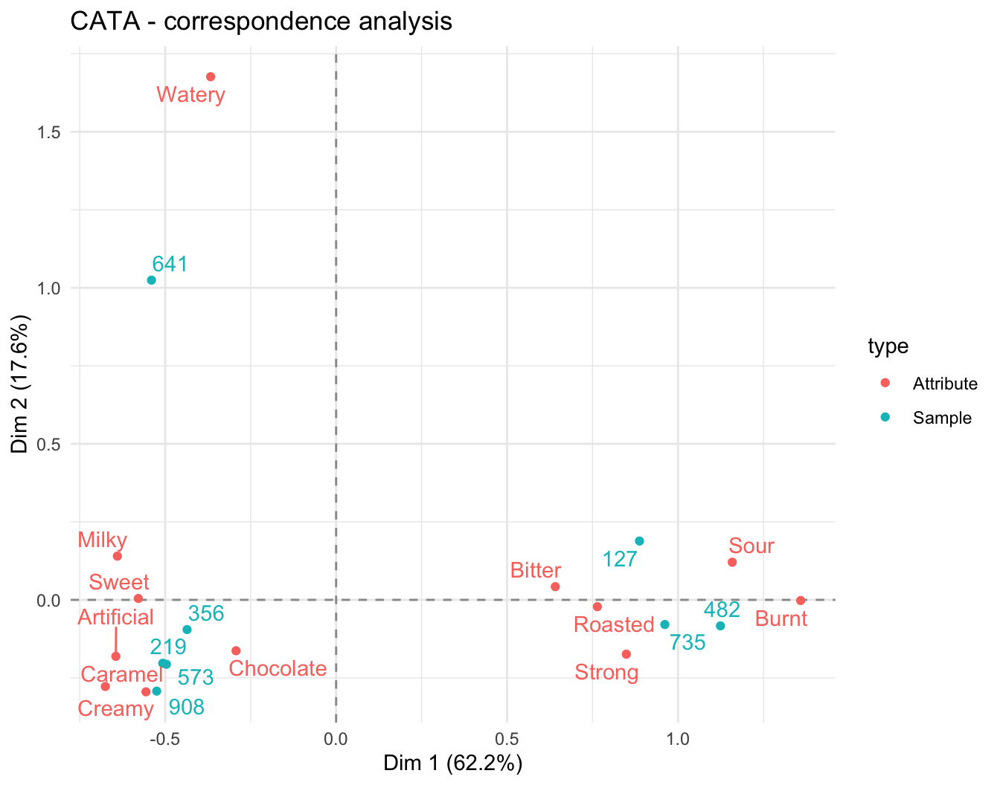
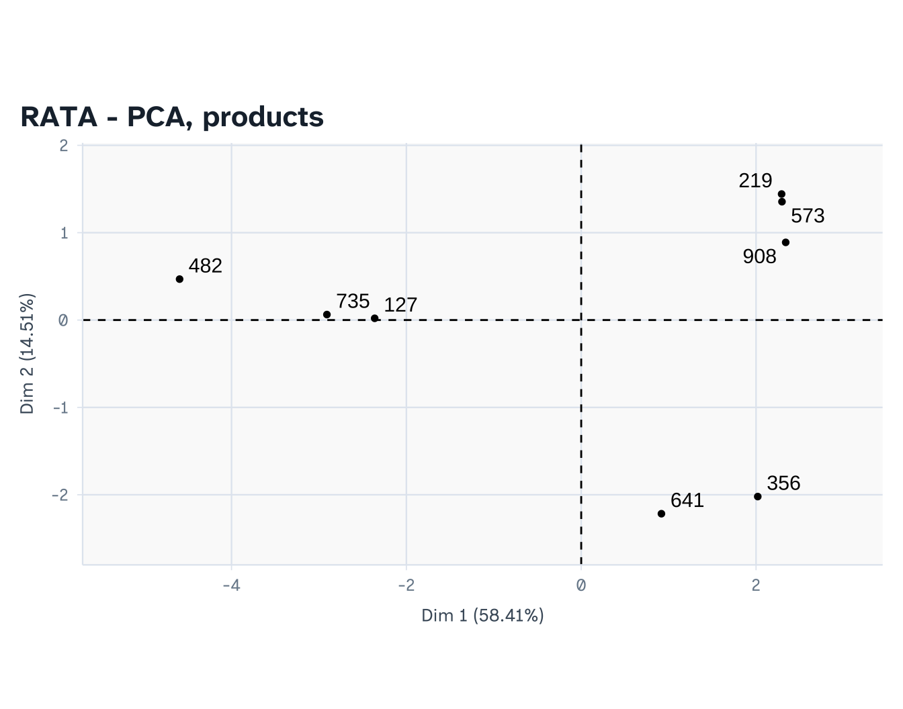
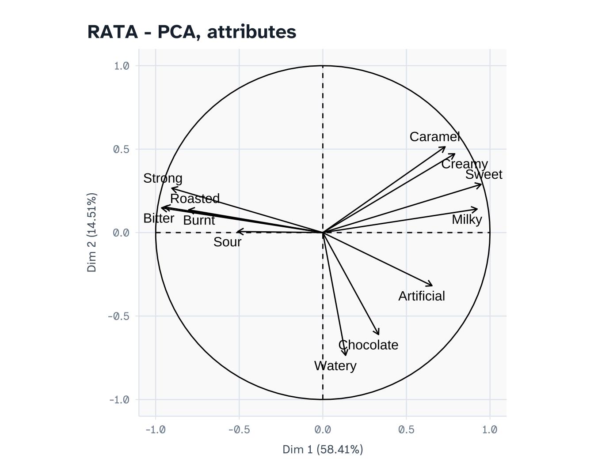

library(readxl) # read the Google Forms export
library(writexl) # write the dummy data to .xlsx
library(dplyr)
library(tidyr)
library(ggplot2)
library(ggrepel)
library(FactoMineR) # CA, PCA, coeffRV1 Project 1 — CATA vs. RATA on instant coffee
Analysis plan (draft) with dummy data
2 Research question
Does adding intensity ratings (RATA) improve product discrimination compared with plain CATA?
Sub-questions that each group must answer:
- Do CATA and RATA produce a similar sensory map of the products? (RV coefficient)
- Which method discriminates more attributes / more product pairs?
Design. Between-subjects: two independent groups of untrained consumers. Group A uses CATA, Group B uses RATA. 8 instant coffees, 12 attributes, ~50 consumers per method. Samples are coded with 3-digit random codes and presented in a balanced order (Williams design) on a printed order sheet.
3 What to read
Main text — Delarue, J., Lawlor, J.B. & Rogeaux, M. (eds.) Rapid Sensory Profiling Techniques: Applications in New Product Development and Consumer Research. Woodhead Publishing.
| Chapter | 1st ed. (2015) | 2nd ed. (2023) |
|---|---|---|
| The use of rapid sensory methods in R&D and research: an introduction | Ch. 1 | Ch. 1 |
| Alternative methods of sensory testing: advantages and disadvantages | Ch. 2 | Ch. 2 |
| Check-all-that-apply (CATA) questions with consumers in practice: experimental considerations and impact on outcome | Ch. 11 | Ch. 12 |
Chapter numbers differ between editions; check which edition your library holds.
RATA is not covered by its own chapter, so read these two papers as well:
- Ares, G., Bruzzone, F., Vidal, L., et al. (2014). Evaluation of a rating-based variant of check-all-that-apply questions: Rate-all-that-apply (RATA). Food Quality and Preference, 36, 87-95.
- Meyners, M., Jaeger, S.R. & Ares, G. (2016). On the analysis of rate-all-that-apply (RATA) data. Food Quality and Preference, 49, 1-10.
4 Google Form setup
Make two forms (one per method). In both forms, the panelist submits one response per sample (use “Submit another response” after each sample). This gives one row per panelist × sample in the export, which is the easiest structure to analyse.
Form A — CATA
| # | Question | Type | Notes |
|---|---|---|---|
| 1 | Panelist ID | Short answer | Response validation: number |
| 2 | Sample code | Dropdown | The 8 three-digit codes |
| 3 | Which of these terms describe this sample? | Checkboxes | 12 attributes; tick Shuffle option order |
Form B — RATA
| # | Question | Type | Notes |
|---|---|---|---|
| 1 | Panelist ID | Short answer | Number |
| 2 | Sample code | Dropdown | 8 codes |
| 3 | Rate the intensity of each term that applies | Multiple-choice grid | Rows = 12 attributes (shuffle row order). Columns = Not applicable, 1 Low, 2 Medium, 3 High. Tick Require a response in each row |
Attribute list (both forms): Bitter, Sweet, Milky, Roasted, Burnt, Caramel, Chocolate, Sour, Watery, Strong, Creamy, Artificial.
5 What the exported .xlsx looks like
Google Forms always adds a Timestamp column as the first column. It is not used in this analysis, so you can delete it or simply ignore it (the code selects columns by name).
In Google Forms: Responses → Link to Sheets → File → Download → Microsoft Excel (.xlsx).
CATA export — checkbox answers arrive as one comma-separated cell:
| Panelist ID | Sample code | Which of these terms describe this sample? |
|---|---|---|
| 1 | 482 | Bitter, Roasted, Strong |
| 1 | 735 | Sweet, Milky, Creamy |
RATA export — a grid becomes one column per row of the grid, named Question [Attribute]:
| Panelist ID | Sample code | Rate the intensity… [Bitter] | Rate the intensity… [Sweet] | … |
|---|---|---|---|---|
| 101 | 482 | 3 High | Not applicable | … |
6 Dummy data
The block below simulates data from one “true” sensory profile per product, so the two methods should agree if they work. Students replace this section with read_excel() on their own export.
set.seed(2026)
attrs <- c("Bitter","Sweet","Milky","Roasted","Burnt","Caramel",
"Chocolate","Sour","Watery","Strong","Creamy","Artificial")
codes <- c("482","735","219","908","356","641","127","573")
names(codes) <- paste0("Coffee_", LETTERS[1:8]) # real identity, hidden from panelists
# True intensity (0 = absent, 3 = high) of each attribute in each product
true_prof <- rbind(
Coffee_A = c(3,0,0,3,2,0,1,1,0,3,0,0), # strong black
Coffee_B = c(2,1,0,3,1,0,1,1,0,2,0,0), # black, milder
Coffee_C = c(1,3,3,1,0,2,1,0,0,1,3,1), # sweet 3-in-1
Coffee_D = c(1,3,2,1,0,3,1,0,0,1,2,2), # caramel 3-in-1
Coffee_E = c(1,2,2,1,0,1,3,0,1,1,2,2), # mocha
Coffee_F = c(1,2,2,1,0,1,1,0,3,0,1,1), # watery cheap 3-in-1
Coffee_G = c(2,1,1,2,1,0,0,2,1,2,1,0), # sour, medium
Coffee_H = c(1,3,3,1,0,2,1,0,0,1,3,1)) # near-duplicate of C (discrimination test)
colnames(true_prof) <- attrs
# ---- CATA: 50 panelists ----
cata_rows <- list()
for (p in 1:50) {
for (prod in sample(names(codes))) {
latent <- true_prof[prod, ] + rnorm(length(attrs), 0, 0.8)
checked <- attrs[latent > 1.6]
cata_rows[[length(cata_rows) + 1]] <- data.frame(
`Panelist ID` = p, `Sample code` = codes[[prod]],
`Which of these terms describe this sample?` = paste(checked, collapse = ", "),
check.names = FALSE)
}
}
cata_raw <- bind_rows(cata_rows)
# ---- RATA: 50 different panelists ----
lab <- c("Not applicable", "1 Low", "2 Medium", "3 High")
rata_rows <- list()
for (p in 101:150) {
for (prod in sample(names(codes))) {
latent <- true_prof[prod, ] + rnorm(length(attrs), 0, 0.8)
score <- ifelse(latent > 1.6, pmin(3, pmax(1, round(latent - 0.4))), 0)
row <- data.frame(`Panelist ID` = p, `Sample code` = codes[[prod]], check.names = FALSE)
for (a in seq_along(attrs))
row[[paste0("Rate the intensity of each term that applies [", attrs[a], "]")]] <-
lab[score[a] + 1]
rata_rows[[length(rata_rows) + 1]] <- row
}
}
rata_raw <- bind_rows(rata_rows)
write_xlsx(cata_raw, "P1_CATA_responses.xlsx")
write_xlsx(rata_raw, "P1_RATA_responses.xlsx")7 Import and reshape
From here on, the code is exactly what students run on their real export.
cata_raw <- read_excel("P1_CATA_responses.xlsx")
rata_raw <- read_excel("P1_RATA_responses.xlsx")
head(cata_raw, 3)CATA → binary long format (1 row per panelist × sample, 1 column per attribute):
cata <- cata_raw %>%
rename(panelist = `Panelist ID`, sample = `Sample code`,
terms = `Which of these terms describe this sample?`) %>%
mutate(panelist = factor(panelist), sample = factor(sample))
for (a in attrs) {
cata[[a]] <- as.integer(grepl(paste0("\\b", a, "\\b"), cata$terms))
}
cata <- cata %>% select(panelist, sample, all_of(attrs))
head(cata)RATA → numeric long format. Following Meyners et al. (2016), Not applicable is scored 0, so absent attributes count as “zero intensity”.
rata <- rata_raw %>%
rename(panelist = `Panelist ID`, sample = `Sample code`) %>%
mutate(panelist = factor(panelist), sample = factor(sample))
names(rata) <- sub("^Rate the intensity of each term that applies \\[(.*)\\]$", "\\1",
names(rata))
rata <- rata %>%
mutate(across(all_of(attrs), ~ as.numeric(substr(ifelse(. == "Not applicable", "0", .), 1, 1)))) %>%
select(panelist, sample, all_of(attrs))
head(rata)8 Analysis
8.1 CATA: citation frequencies
cata_freq <- cata %>% group_by(sample) %>%
summarise(across(all_of(attrs), sum)) %>%
tibble::column_to_rownames("sample") %>% as.matrix()
cata_freq Bitter Sweet Milky Roasted Burnt Caramel Chocolate Sour Watery Strong
127 36 8 7 38 20 1 1 37 11 33
219 14 50 45 14 0 33 14 2 2 10
356 16 36 27 14 1 9 48 2 8 4
482 46 1 0 49 36 1 12 16 1 48
573 14 49 49 10 2 37 7 2 2 15
641 13 36 38 9 0 14 8 0 44 0
735 36 6 0 49 4 1 7 13 1 39
908 11 47 28 13 0 49 17 1 2 15
Creamy Artificial
127 13 0
219 48 8
356 34 28
482 1 1
573 49 9
641 10 9
735 0 1
908 37 308.2 CATA: Cochran’s Q test per attribute
Cochran’s Q tests whether the proportion of panelists ticking an attribute differs across products. It is the CATA equivalent of a one-way repeated-measures ANOVA on binary data.
cochran_q <- function(y, block, treat) {
m <- tapply(y, list(block, treat), sum) # blocks x treatments, 0/1
k <- ncol(m); Cj <- colSums(m); Ri <- rowSums(m); N <- sum(m)
Q <- (k - 1) * (k * sum(Cj^2) - N^2) / (k * N - sum(Ri^2))
c(Q = Q, df = k - 1, p = pchisq(Q, k - 1, lower.tail = FALSE))
}
cata_q <- t(sapply(attrs, function(a) cochran_q(cata[[a]], cata$panelist, cata$sample)))
cata_q <- data.frame(attribute = attrs, round(cata_q, 4))
cata_q$significant <- cata_q$p < 0.05
cata_q8.3 CATA: correspondence analysis
Run CA only on the attributes that discriminate (significant Cochran’s Q).
sig_cata <- cata_q$attribute[cata_q$significant]
ca_cata <- CA(cata_freq[, sig_cata], graph = FALSE)
round(ca_cata$eig[1:3, ], 1) eigenvalue percentage of variance cumulative percentage of variance
dim 1 0.5 62.2 62.2
dim 2 0.1 17.6 79.8
dim 3 0.1 9.7 89.5ca_rows <- data.frame(ca_cata$row$coord[, 1:2], label = rownames(cata_freq), type = "Sample")
ca_cols <- data.frame(ca_cata$col$coord[, 1:2], label = sig_cata, type = "Attribute")
ggplot(rbind(ca_rows, ca_cols), aes(Dim.1, Dim.2, colour = type, label = label)) +
geom_hline(yintercept = 0, lty = 2, colour = "grey60") +
geom_vline(xintercept = 0, lty = 2, colour = "grey60") +
geom_point() + geom_text_repel(show.legend = FALSE) +
labs(title = "CATA - correspondence analysis",
x = sprintf("Dim 1 (%.1f%%)", ca_cata$eig[1, 2]),
y = sprintf("Dim 2 (%.1f%%)", ca_cata$eig[2, 2])) +
theme_minimal()
8.4 RATA: two-way ANOVA per attribute
Model per attribute: score ~ sample + panelist (panelist as a block). Then Tukey HSD to count discriminated pairs.
rata_aov <- t(sapply(attrs, function(a) {
fit <- aov(as.formula(paste(a, "~ sample + panelist")), data = rata)
s <- summary(fit)[[1]]
tk <- TukeyHSD(fit, "sample")$sample
c(F = s["sample", "F value"], p = s["sample", "Pr(>F)"],
pairs_diff = sum(tk[, "p adj"] < 0.05))
}))
rata_aov <- data.frame(attribute = attrs, round(rata_aov, 4))
rata_aov$significant <- rata_aov$p < 0.05
rata_aov8.5 RATA: PCA on product means
rata_means <- rata %>% group_by(sample) %>%
summarise(across(all_of(attrs), mean)) %>%
tibble::column_to_rownames("sample") %>% as.matrix()
sig_rata <- rata_aov$attribute[rata_aov$significant]
pca_rata <- PCA(rata_means[, sig_rata], scale.unit = TRUE, graph = FALSE)
round(pca_rata$eig[1:3, ], 1) eigenvalue percentage of variance cumulative percentage of variance
comp 1 7.0 58.4 58.4
comp 2 1.7 14.5 72.9
comp 3 1.5 12.7 85.7plot(pca_rata, choix = "ind", title = "RATA - PCA, products")
plot(pca_rata, choix = "var", title = "RATA - PCA, attributes")
8.6 Comparing the two methods
8.6.1 Similarity of the product maps: RV coefficient
Both maps must have the products in the same row order.
X <- ca_cata$row$coord[codes, 1:2]
Y <- pca_rata$ind$coord[codes, 1:2]
rv <- coeffRV(X, Y)
rv[c("rv", "rvstd", "p.value")]$rv
[1] 0.9191706
$rvstd
[1] 4.36977
$p.value
[1] 0.0027987948.6.2 Discrimination: how many product pairs does each method separate?
For CATA, a pair of products is “discriminated” on an attribute if McNemar’s test is significant. For RATA, we already have Tukey HSD.
pairs <- combn(levels(cata$sample), 2)
cata_pairs <- sapply(sig_cata, function(a) {
sum(apply(pairs, 2, function(pr) {
x <- cata[cata$sample == pr[1], c("panelist", a)]
y <- cata[cata$sample == pr[2], c("panelist", a)]
m <- merge(x, y, by = "panelist")
tab <- table(factor(m[[2]], 0:1), factor(m[[3]], 0:1))
if (tab[1, 2] + tab[2, 1] == 0) return(FALSE)
mcnemar.test(tab)$p.value < 0.05
}))
})
data.frame(attribute = attrs,
CATA_pairs = ifelse(attrs %in% sig_cata, cata_pairs[attrs], 0),
RATA_pairs = rata_aov$pairs_diff)Look in particular at the near-duplicate pair 219 vs. 573: neither method should separate them strongly. If one method does, it may be picking up noise.
8.6.3 Summary table for the poster
data.frame(
Criterion = c("Discriminating attributes (p < 0.05)",
"Variance explained, Dim 1 + 2 (%)",
"Discriminated product pairs (sum over attributes)",
"RV between maps (p-value)"),
CATA = c(length(sig_cata),
round(ca_cata$eig[2, 3], 1),
sum(cata_pairs),
sprintf("%.2f (p = %.3f)", rv$rv, rv$p.value)),
RATA = c(length(sig_rata),
round(pca_rata$eig[2, 3], 1),
sum(rata_aov$pairs_diff),
""))9 Interpretation
With the dummy data (your numbers will differ):
- CATA found 12 of 12 attributes discriminating; RATA found 12. Attributes that are significant only in RATA are the ones where products differ in how much, not whether, the attribute is present (e.g., two black coffees that are both bitter, but one more so).
- The RV coefficient between the CATA and RATA maps is 0.92 (p = 0.0028). A high, significant RV means both methods tell the same story about how the coffees relate to each other.
How to write the conclusion. Weigh the extra information against the more demanding task:
- If RV is high and RATA adds few extra discriminating attributes or pairs, CATA is sufficient and simpler for consumers.
- If RATA separates products that CATA cannot (e.g., the two black coffees), the more demanding task is worth it when the product set contains products that are similar in composition.
- Discuss the design limitation: between-subjects means panel differences are confounded with method differences. A within-subjects replication (same panelists, both methods, counterbalanced) would remove this.